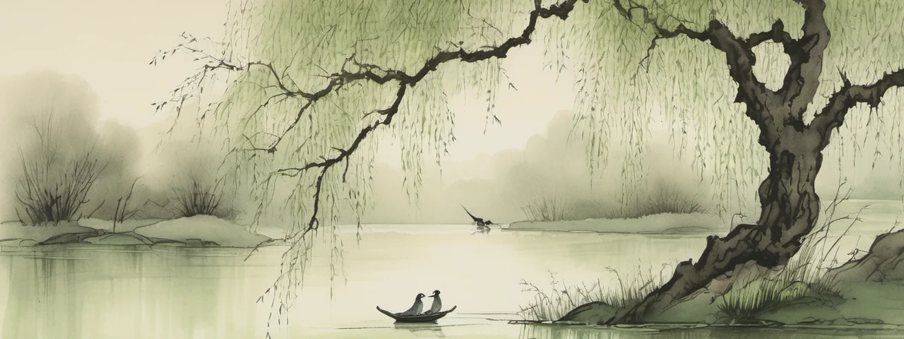

立春 · 春
咏柳
碧玉妆成一树高， 万条垂下绿丝绦。 不知细叶谁裁出， 二月春风似剪刀。
赏析：把春风比作剪刀，是千古名句。柳叶的细、春风的巧，短短七个字就写尽了。
节气关联
立春一过，柳梢先绿。古人把柳芽看作春天的信使——立春初候“东风解冻”，最先变软的往往就是柳条。诗里的“二月春风”正是立春到雨水前后，柳色由鹅黄转嫩绿，才有“万条垂下绿丝绦”。折柳送别也是古俗，柳与“留”谐音，一枝柳就是一句舍不得。